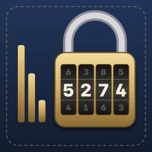

候補が減る数当て
言うたびに、残りの数が見える。真鍮のダイヤル錠で遊ぶヒット＆ブロー。
0〜9 の、同じ数字を2回使わない3けた・4けたの数を当てる推理のゲームです。言った数と答えをくらべて、数も場所も合う数字の数が H（ヒット）、数だけ合う数字の数が B（ブロー）。真鍮のダイヤル錠の輪をまわして数を決めます。
- 候補の目盛り。1回言うごとに、これまでの H と B の全部に合う「まだ答えになりうる数」が何通りから何通りに減ったかを、錠前の横の目盛りで見せます（4けたなら 5040 → 1440 → 132 → 12 → 1 のように）。10通り以下になったら、残りを一覧で見られます
- 合わない回の知らせ。前の回の手がかりと合わない数（答えになりえない数）を言おうとすると、言う前に「1回目（0H1B）と合いません」のように、どの回と合わないかを知らせます
- 振り返り。当てたら、回ごとに候補がいくつ減ったかと、そのときいちばん減らせた数（平均の残りがいちばん少ない数）をくらべられます
- 4つの遊び方。ひとりで／日付で決まる「きょうの1問」／コンピュータと交互に当て合う（やさしい・ふつう・つよい）／ふたりで1台を回す
- 目盛りや知らせは、設定で切れます。音は出しません（振動は切れます）
- 登録・課金・オンラインの対戦はありません。インターネットにつながっていなくても遊べます。記録はこの端末の中だけに保存します。画面のいちばん下に小さな広告が出ます（画面いっぱいの広告・動画の広告は出しません）